버튼 기능¶
아래와 같이 버튼 기능이 제공됩니다. 일부 기능은 현재 경로나 선택한 파일/폴더의 읽기 혹은 쓰기 권한을 필요로 합니다. 권한이 없다면 해당 기능을 사용할 수 없습니다.
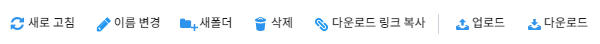새로 고침¶
새로 고침 버튼을 클릭하면 현재 파일 경로 기준으로 파일 목록을 갱신합니다.
이름 변경¶
파일 혹은 폴더를 선택 후 이름 변경 버튼을 클릭하면 아래와 같이 팝업이 열립니다. 기존의 이름을 원하는 이름으로 수정 후 변경 버튼을 클릭하면 파일명이 변경됩니다.
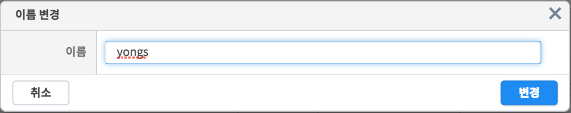새 폴더 생성¶
새폴더 버튼을 클릭하면 아래과 같이 팝업이 열립니다. 폴더명을 입력 후 생성 버튼을 클릭하면 현재 경로에 폴더가 생성됩니다.
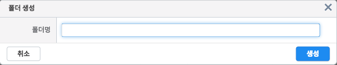파일 삭제¶
파일 혹은 폴더를 선택 후 삭제 버튼을 클릭하면 아래과 같이 팝업이 열립니다. 확인 버튼을 클릭하면 선택한 파일이 삭제됩니다. 폴더를 삭제할 경우 하위 경로의 모든 파일 및 폴더가 삭제되므로 주의해야 합니다.
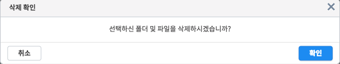링크 복사¶
파일을 선택 후 링크 복사 버튼을 클릭하면 아래와 같이 팝업이 열리고 해당 파일을 다운로드할 수 있는 주소가 클립보드에 복사됩니다.
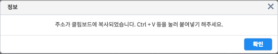업로드¶
업로드 버튼을 클릭하면 아래과 같이 파일 업로드 다이얼로그가 열립니다.
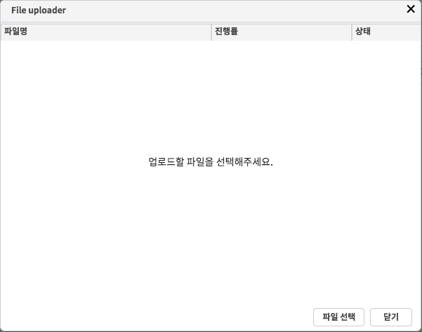이 다이얼로그에서 파일 선택 버튼을 클릭하면 로컬 PC의 파일을 선택할 수 있고, 파일을 선택하면 아래와 같이 업로드가 진행됩니다.
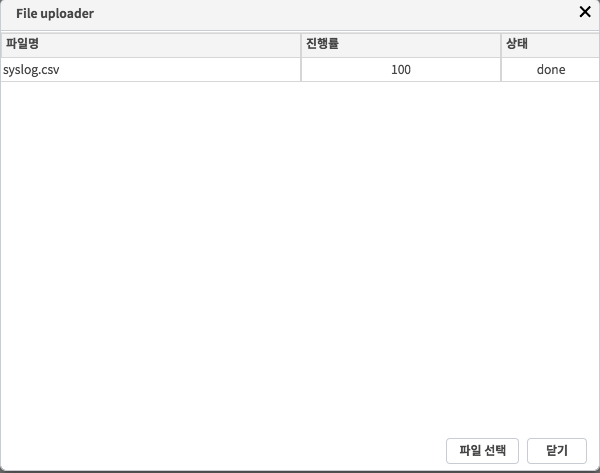다운로드¶
파일을 선택 후 다운로드 버튼을 클릭하면 아래와 같이 팝업이 열리고, 다운로드 버튼을 클릭하면 파일을 다운로드됩니다.
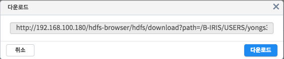파일 전달¶
Mount 브라우징 상태에서만 사용할 수 있는 버튼 기능입니다. 선택한 특정 파일을 다른 사용자에게 전달할 수 있습니다.
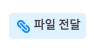파일을 선택 후 파일 전달 버튼을 클릭하면 아래와 같이 팝업이 열립니다. 사용자/그룹 탭을 전환하면서 파일을 전달받을 사용자 혹은 그룹을 선택합니다.
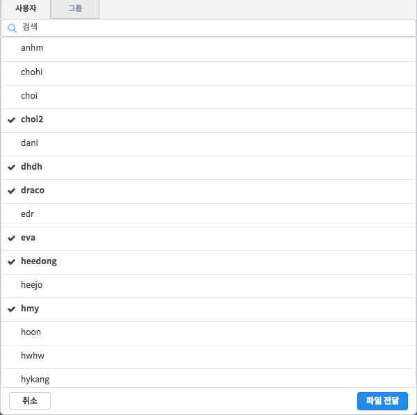파일 전달이 성공적으로 수행되면 아래와 같은 메시지가 출력됩니다.
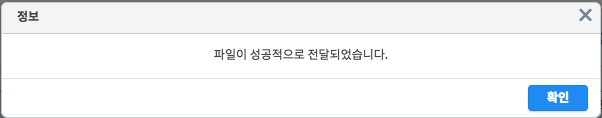전달한 파일은 선택한 사용자 또는 선택한 그룹의 모든 사용자의 shared 폴더 안에 복사됩니다. 복사된 파일의 이름은 전달자 아이디, 수행 시간, 원본 파일명을 조합한 문자열로 설정됩니다.
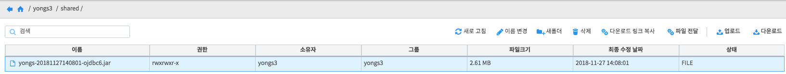